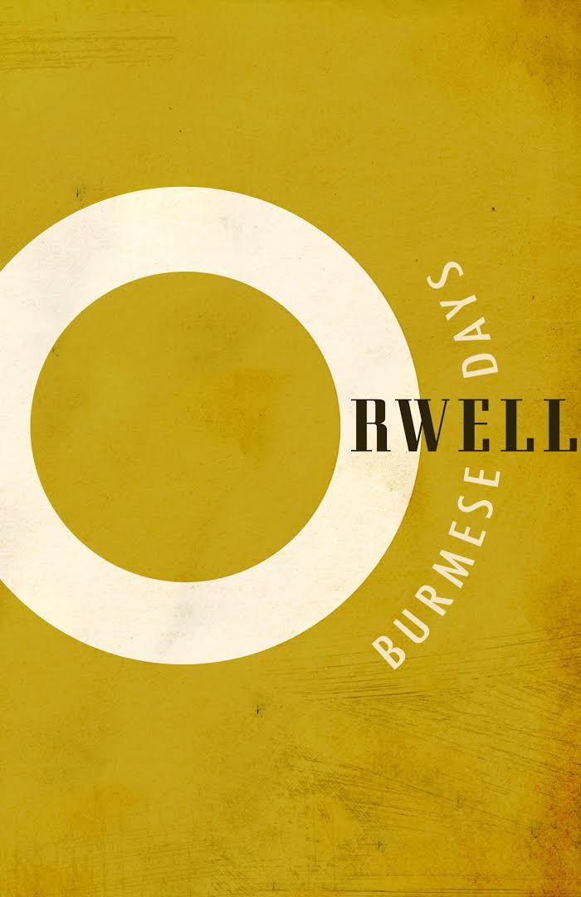

Other Works
The road to Wigan Pier
Homage to Catalonia


George Orwell, born as Eric Arthur Blair, was a 20th century dytopian author. His most famous works are 1984 and Animal Farm. He was born in Burmeo as the son of a respected but not very wealthy family
He studied in Oxford but he did not dedicate too much of his time to his studies. He lived during the World Wars and therefore he had a good picture of the effect of war and he had also see the rise and fall of different totalitarian regimes, such as Hitler in Nazi-Germany or Mussolini in Italy. He was also a supporter of the socialists which can all be found also in his books. He used his books, over all 1984 as a warning for all of us. He wanted to show people the worst he could immagine as a way of telling them to make sure not to ever let this happen in reality. He also worked with the Burmese Police as a police officer which as you can immagine sometimes tortured people. This can also be seen in his books such as in the various torture scenes in 1984.
He was married 2 times, the first time with Eleen Maud Blair and the second time with Sonja Brownell who was also the model for Julia in 1984, because she worked in the Ministry of Information which was a British Ministry during WW2 tasked with creating propaganda.
Orwell died in 1950 aging only 46 in the University College Hospital in London
Click here to continue